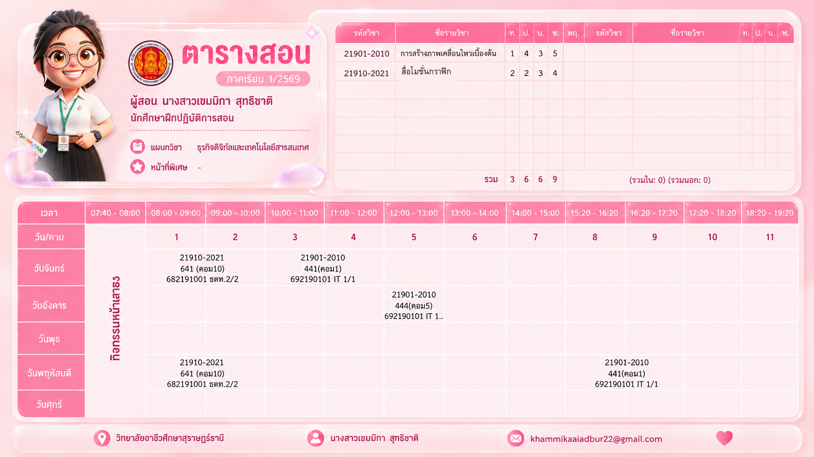

หน้าย่อยที่ 1 • ภาคเรียนที่ 1/2569 (เสร็จสมบูรณ์)
พฤษภาคม – กันยายน 2569
ตารางสอนและแผนการจัดการเรียนรู้ ภาคเรียนที่ 1/2569
รายวิชา 020413232 ปฏิบัติการสอนด้านเทคโนโลยีคอมพิวเตอร์ในสถานศึกษา 1 (540 ชั่วโมง) • วิทยาลัยอาชีวศึกษาสุราษฎร์ธานี
ตารางภาระงานสอน 1/2569
ตารางสอนที่ได้รับมอบหมาย ปีการศึกษา 1/2569
รับผิดชอบสอน 2 รายวิชา ในภาคเรียนที่ 1 ปีการศึกษา 2569

แผนการจัดการเรียนรู้ประจำรายวิชา (ภาคเรียนที่ 1/2569)
เอกสารแผนการจัดการเรียนรู้และประมวลรายวิชาที่ได้รับมอบหมายในภาคเรียนที่ 1/2569
รายวิชาที่ 1 • ภาคเรียนที่ 1/2569
แผนการสอน รายวิชาการสร้างภาพเคลื่อนไหวเบื้องต้น (1/2569)
ครูพี่เลี้ยง: นางอรอนงค์ แซ่ลิ่ม • Basic Animation Course Lesson Plan
รายวิชาที่ 2 • ภาคเรียนที่ 1/2569
แผนการสอน รายวิชาสื่อโมชันกราฟิก / โปรแกรมสื่อมัลติมีเดีย (1/2569)
ครูพี่เลี้ยง: นายอากรณ์ ดิษฐ์คล้าย • Motion Graphics Course Lesson Plan